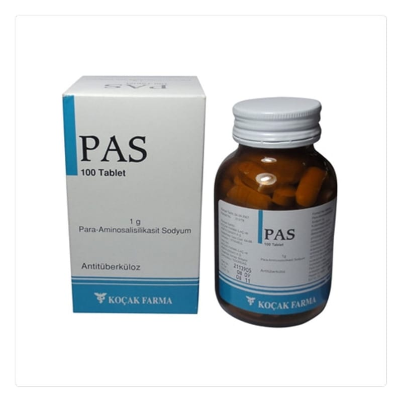

Pas 1 g Tablet , 5000 Adet

Ne için kullanılır
KT · Bölüm 1PAS, tüberküloz (verem) tedavisinde etkili p-aminosalisilik asit sodyum tuzu içerir. PAS, 50,100, 250 ve 500 tabletlik cam şiş elerde piyasaya verilmi ş tir. PAS, tüberkülozun k ı sa ve uzun süreli tedavisinde, di ğ er antitüberküloz ilaçlarla birlikte kullan ıl ır. 1/6